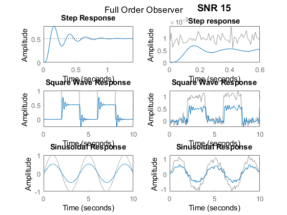
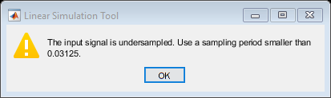

A = [0 1; 0 0];
B = [0; 826];
C = [1 0];
ss_ol = ss(A,B,C,0);
TFOL = tf(ss_ol)
desiredPoles = [-20 + 20i -20 - 20i]
K = place(A,B,desiredPoles);
Nbar = rscale(ss_ol,K)
observerGain = acker(A.',C.', desiredPoles.').';
disp('Observer Gain Matrix');
disp(observerGain);
G = observerGain;
At = [ A-B*K B*K
zeros(size(A)) A-G*C ];
Bt = [ B*Nbar
zeros(size(B)) ];
Ct = [ C zeros(size(C)) ];
sys_cl_FullObs = ss(At,Bt,Ct,0);
TFFO = tf(sys_cl_FullObs)
TFFO_sys = TFFO*TFFS/(1 + TFFO*TFFS)
figure(1)
subplot(3,2,1)
step(TFFO_sys)
sgtitle('Full Order Observer')
title('Step Response')
subplot(3,2,3)
[u_square,t] = gensig('square',4,10,0.0001);
lsim(TFFO_sys,u_square,t)
title('Square Wave Response')
subplot(3,2,5)
[u_sin,t] = gensig('sin',4,10,0.001);
lsim(TFFO_sys,u_sin,t)
title('Sinusoidal Response')
subplot(3,2,2)
t_step = 0:0.01:0.6;
u_step = 0.001*ones(size(t_step));
y_step = awgn(u_step,15,'measured');
lsimplot(TFFO_sys,y_step,t_step)
title({'\fontsize{14}SNR 15';'\fontsize{11}Step response'})
subplot(3,2,4)
[u_square,t] = gensig('square',4,10,0.1);
y_square = awgn(u_square,15,'measured');
lsimplot(TFFO_sys,y_square,t)
title('Square Wave Response')
subplot(3,2,6)
[u_sin,t] = gensig('sin',4,10,0.1);
y_sin = awgn(u_sin,15,'measured');
lsimplot(TFFO_sys,y_sin,t)
title('Sinusoidal Response')
TFOL =
826
---
s^2
Continuous-time transfer function.
desiredPoles =
-20.0000 +20.0000i -20.0000 -20.0000i
Nbar =
0.9685
Observer Gain Matrix
40
800
TFFO =
800
----------------
s^2 + 40 s + 800
Continuous-time transfer function.
TFFO_sys =
6.608e05 s^4 + 5.286e07 s^3 + 2.115e09 s^2 + 4.229e10 s + 4.229e11
------------------------------------------------------------------------
s^8 + 160 s^7 + 1.28e04 s^6 + 6.4e05 s^5 + 2.242e07 s^4 + 5.649e08 s^3
+ 1.031e10 s^2 + 1.242e11 s + 8.325e11
Continuous-time transfer function.
 